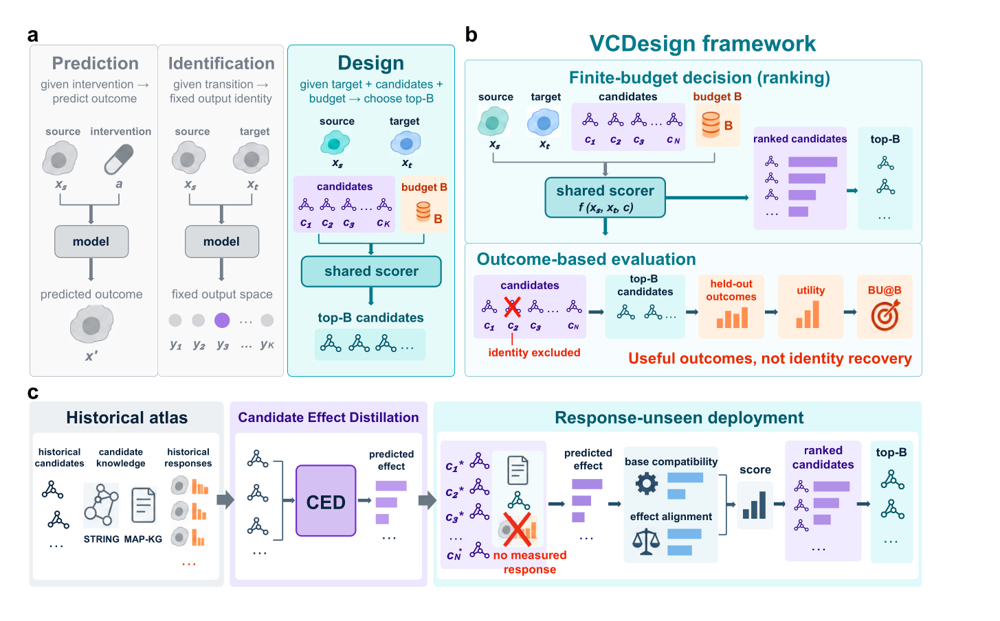

Specify the transition
Represent the cellular source state and the desired target state without assuming a single correct intervention identity.
source → targetVCDesign / finite-budget intervention design
Rank a feasible intervention set toward a desired cellular state under a finite experimental budget.
VCDesign evaluates models by the utility of the experiments they prioritize. VCDesign-CED uses historical perturbation measurements and biological knowledge to infer effects for candidates whose own responses are unavailable to its effect atlas.

Useful outcomes, not identity recovery.
A design problem starts with a source state, a target state, the candidates that can actually be tested, and the number of experiments the budget permits. VCDesign turns those ingredients into one shared ranking interface.
Represent the cellular source state and the desired target state without assuming a single correct intervention identity.
source → targetApply one shared scorer to a variable candidate set, then return the top-B prefix allowed by the experimental budget.
candidates → rankingExclude the query identity and evaluate selected candidates using independently measured held-out outcomes.
outcomes → utilityMeasured responses provide direct evidence when they exist. CED addresses the prospective setting in which a candidate must be prioritized before its own perturbational response is available.
Measured-response regime
When candidate responses have already been profiled, response-profile retrieval is the more direct source of evidence for alignment with the requested transition.
VCDesign is evaluated across four CRISPRi Perturb-seq contexts. The protocol keeps the candidate pool, response availability, held-out outcomes, budget, and identity exclusions explicit.
The top-B prefix makes the budget part of the decision rather than an afterthought. Outcome-based evaluation then measures the utility of the experiments selected under that budget.
The bundled demo checks response-basis construction, ridge effect prediction, missing-knowledge handling, and score fusion. Its outputs are software checks, not biological results.
git clone https://github.com/Boom5426/VCDesign-CED.git
cd VCDesign-CED
python3.11 -m venv .venv
source .venv/bin/activate
python -m pip install -e ".[model,data,dev]"
python examples/ced_demo.py
python -m pytest -qExpected repository test result: 162 passed.
The companion dataset contains processed feature matrices, four-context packs, comparator scores, the selected checkpoint, evaluation records, and a SHA-256 manifest.
HF Hugging Face datasetBoom5426/VCDesign ↗Processed inputsFrozen response, STRING, MAP-KG, and candidate-knowledge arrays.
Reference checkpointThe selected epoch-8 final-clean model checkpoint.
Run recordsSelection, evaluation, external-baseline, and verification manifests.
Integrity manifestByte sizes and SHA-256 digests for the released snapshot.
The manuscript defines the design task, response-availability regimes, evaluation protocol, comparator settings, and controlled diagnosis of transferable design.